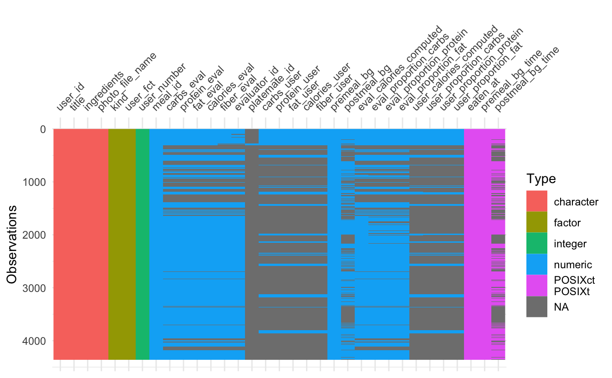

Chapter 4 Missing values
4.1 Per user data availability
Different users have different types of data included in their datasets. The dataset used in this project was a snapshot of an offline data repository created from a live Mealyzer database; not all data fields were available for all users. For example, while all users have records of meals and BG levels captured before meals (the apps require pre-meal BG levels to be captured with every captured meal), some users did not have meal images available, and not all users had Fitbit data (activities and sleep) available.

# A tibble: 1 x 1
n
<int>
1 7Overall, only 7 users had complete datasets with all data present (including complete meals and fitbit data); however, even for these 7 users not all recorded meals included all the data fields. As a consequence, the dataset in this project was sparse and inconsistent between users. To accommodate this variability, each sub-analysis presented in this report only included users that had data corresponding to the analysis. Consequently, user IDs vary from one sub-analysis to another.
4.2 Meals data availability

There are several patterns of missing values that can be seen from this plot.
platemate_id is almost universally missing from all meals (platemate_id referred to a different way of obtaining nutritional composition of meals not used in these studies)
premeal_bg and premeal_bg_time are 100% present. This was due to the design of the data recording features of the apps: all apps in these studies did not allow recording a meal without also recording BG reading taken shortly before the meal.
postmeal_bg and postmeal_bg_time on the other hand are not recorded for all meals. Unlike pre-meal BG level, which was a required field for every captured meal, post-meal BG needed to be entered by users 2 hours after each meal and separately from the meal. However, few users consistently captured this reading, despite notifications from the app reminding them to record post-meal BG.
Further we show a breakdown of “compliance” for taking postmeal BG, and a way to impute the missing values.
Some relatively small percentage of meal are missing the “eval” (evaluator’s) fields on the nutritional meal breakdown (e.g. calories_eval, eval_calories_computed, eval_proportion_carbs…).
The “user” nutritional breakdown values are mostly missing (fields like calories_user, user_calories_computed, user_proportion_carbs…). The reason is that some versions of the app asked users to enter nutritional estimation, but some version only asked for comparison with goals, but did not ask to enter nutritional estimation.

4.3 Visualizing user compliance on recording postmeal BG

There does not seem to be any patterns in this visualization beyond staing that some users were diligent and recorded most of the postmeals BG, some totally ignored it, and the majority of users are somewhere in between.
4.4 Imputing post-meal BG
As shown before, many meals are missing post-meal BG records, indicating that the users did not record another BG reading around 2h mark as instructed. However, in some cases, these users recorded their next meals and the corresponding pre-meal BG levels. We impute missing values for postmeal_bg and postmeal_bg_time with the next meal premeal values.
After imputing postmeal_bg and postmeal_bg_time several new metrics were calculated:
premeal_bg_delay_minutescalculated number of minutes before premeal BG is taken and the mealpostmeal_bg_delay_minutescalculated number of minutes after the meal when postmeal BG was takenbg_impactcalculated difference betweenpostmeal_bgandpremeal_bgbg_impact_sloperatio ofbg_impactover the duration in minutes between post-meal and pre-meal times. Higherbg_impact_slopemeans faster BG increase abter the meal
4.5 Analyzing pre and post meal BG time intervals
Here we look at delays between capturing meals and BG levels. Per study instructions, pre-meal BG levels should be captured at the same time as meals they are associated with, and post-meal BG levels should be captured 2 hours after recording the meal (at which time users receive a reminder from the app); however, the apps also give users flexibility in how they record meals and BG levels. Below we show the distribution of values for premeal BG delay (defined as the difference in minutes between users recording a BG reading and eating a meal), and postmeal BG delay (defined as the difference in minutes between users eating a meal and taking a postmeal BG reading).

Premeal BG delay distribution has two distinct modes, one at around 5 min and another at around 22 min. This distribution suggests that users developed several different approaches to recording meals and BG levels. In the first scenario, users measured their BG, and recorded this BG with the application before starting the meal (adjusting the BG test time to about 5min back). In the second scenario, there is a longer delay between the captured pre-meal BG level and the captured meal. This suggests that these users may have measured their BG levels, but then proceeded to eat their meal first, and recorded both the meal the captured BG level only after the meal was finished, adjusting the time for BG to about 22 min back). One way to confirm this would be to visually analyze meal images for meals belonging to the second mode and see if those images include already completed meals. The researcher confirmed that in focus groups some participants reported the process of capturing meals to be disruptive; it is possible that these participants developed work-arounds that helped them to record meals without delaying enjoyment of meals while hungry.
Post-meal BG levels are recorded with a median delay around 2h 15min; this was probably due to the fact that the app was sending users reminders at around 2h after each meal. This distribution has a long tail and a many outliers, probably caused by our post-meal BG imputation method and/or lapses in consistently using the app for all meals. For any analysis that focuses on the question of glycemic impact of the meals such long post-meal interval will create high variability and reduce reliability. In our analysis we filtered meals to only those that have a postmeal BG at least 4h after the meal.
4.5.1 Selecting users for the analysis
Not all users used the application in the same capacity, and some recorded very few meals. For the further analysis we select top 24 users by the number of meals (for convenient facetting in a grid)
[1] "2254" "2890" "1821" "2948" "2392" "1983" "2942" "2312" "2475" "2721"
[11] "2800" "24" "2536" "2262" "2004" "2702" "56" "2308" "1884" "2288"
[21] "57" "1665" "1809" "58" 4.6 Final selected meals subset for BG impact analysis
We limit the list of all meals with imputed values to only those users with the most meals and where pre and post meal delays are withing acceptable range (1h for premeal delay and 4h for postmeal delay).
And finally saving the dataset in CSV files to make it available for the interactive Shiny application.